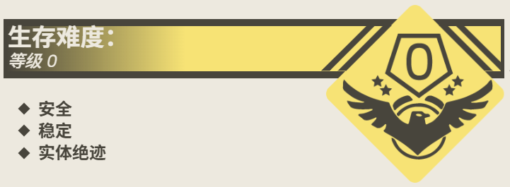

Level 2.2 是 Level 2 的一个子层级，其外观与 The School Rooms 中的大部分层级都不同，更像位于山间的一个供旅客观赏风景的设施。Level 2.2 的主体是一个尺寸约为 20 米 × 15 米的木制平台，平台两旁围有高约为 2 米的栏杆。此层级的空间适当，能容纳约 30 名流浪者进入。
Level 2.2 最特别的一点是其景色的迷人，其主要原因为 Level 2.2 特殊的地理位置。此子层级完全介于Level 2 和学校的绿化带之间，有着新鲜的空气，并可以居高临下俯看整个 Level 0和Level 1。据流浪者的描述，每当阳光洒向Level 2.2，此层级便像一块被镀了金的画框，框住远处的云天与校园风光；风掠过木制栏杆，携着草木的清香，在这里缓缓铺展。
并且，此层级没有观测到任何实体的出现，流浪者可以放心地在这里度过“下课时间”，但务必在“上课时间”原路返回，切勿违反 The School Rooms 的正常运转，这很重要。
一句话，此层级是集美景和安全为一体的，流浪者公认良好的一个子层级。
本层级没有任何实体的发现。
R.S.S 的“物品拍卖会”：该组织经常在本层级通过展示一些稀有物件和流浪者交换实用物资，若流浪者有需要，可以向他们寻求帮助。
“嘿，伙计，要不要来看看我们最新采购来的小玩意儿？”
Level 2.2 的出入口可以轻松地在位于 2 层的 Level 2 中发现。